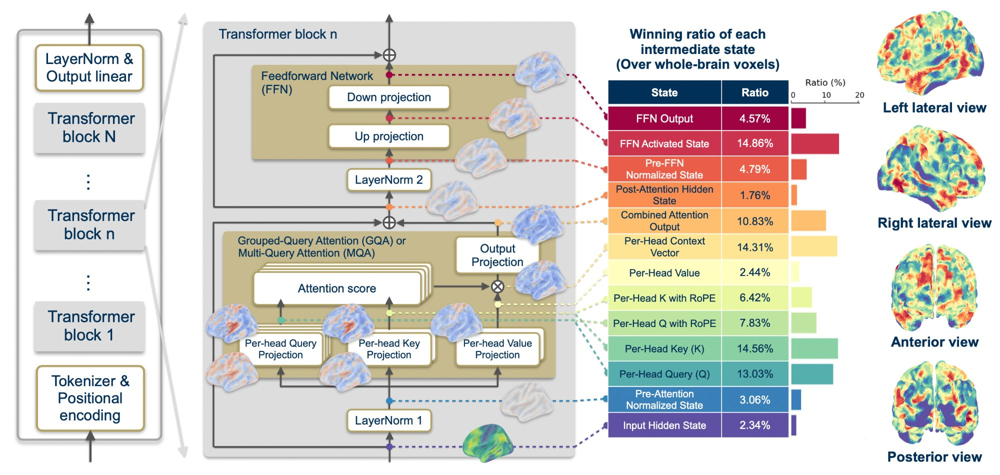
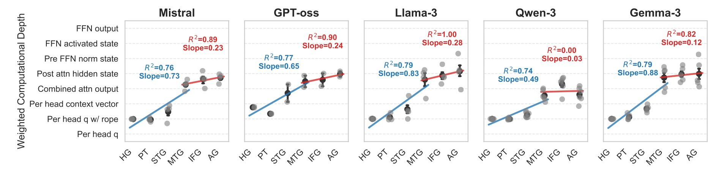
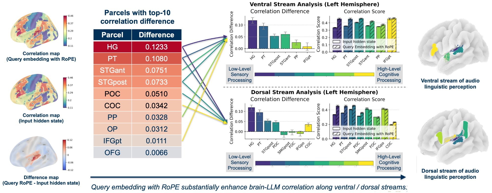
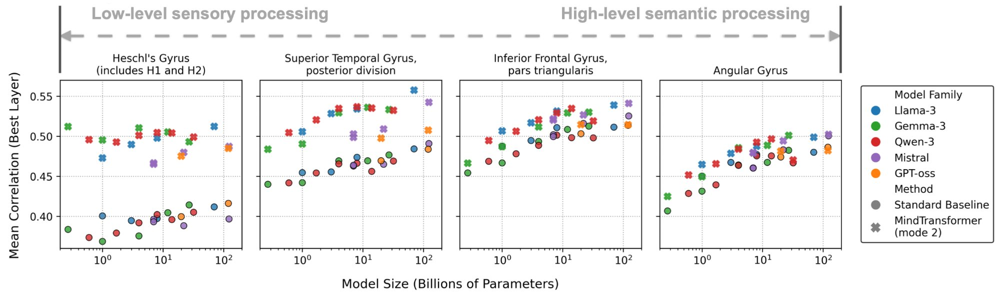

The alignment of Large Language Models (LLMs) and brain activity provides a powerful framework to advance our understanding of cognitive neuroscience and artificial intelligence. MindTransformer zooms into one of the fundamental units of LLMs—the transformer block—to provide the first systematic computational neuroanatomy of its internal operations and human brain activity.
Analyzing 21 state-of-the-art LLMs (270M–123B parameters) across five major families, we reveal a universal intra-block hierarchy: early attention states align with sensory cortices, while Feedforward Network (FFN) states align with higher-order association areas. Over 90% and 96% of brain voxels in language and sensory regions are better explained by previously unexplored intermediate computations than by the commonly used hidden states.
Furthermore, we identify that Rotary Positional Embeddings (RoPE) are the specific mathematical engine driving alignment in the human auditory cortex—per-head queries with RoPE best explain 74% of auditory cortex voxels versus 8% without, systematically improving alignment along both ventral and dorsal auditory pathways. Building on these insights, MindTransformer achieves correlation improvements of 0.111 in primary auditory cortex—gains that exceed those from scaling LLMs by 456×.




| Family | Model Variants (Parameters) | Layers |
|---|---|---|
| Llama-3 | 1B, 3B, 8B, 70B | 16 – 80 |
| Qwen-3 | 0.6B, 1.7B, 4B, 8B, 14B, 32B | 28 – 64 |
| Mistral | 7B (v0.2/v0.3), Small (22B), Large (123B) | 32 – 88 |
| GPT-oss | 20B, 120B | 24 – 36 |
| Gemma-3 | 270M, 1B, 4B, 12B, 27B | 18 – 62 |
@inproceedings{chen2026mindtransformer,
title = {The Mind's Transformer: Computational Neuroanatomy
of LLM-Brain Alignment},
author = {Chen, Cheng-Yeh and Sivakumar, Raghupathy},
booktitle = {International Conference on Learning
Representations (ICLR)},
year = {2026}
}